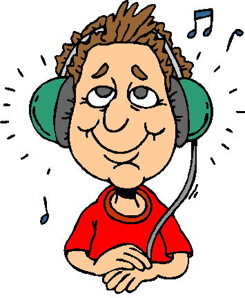

When I am interested in one thing...
When I am interested in one thing, do it for a long time but give it up due to some reasons and I pick it up as years ago, I will say “ I love it”.My name is...
My name is Xinyi Ye, a sophomore studying at UGA. Although my major is business, which is totally different from music, I cannot get rid of it since I have loved it for almost twenty years. Music makes me relieved and set me free. Being a crazy Capricornus of singing pop songs with playing keyboard, I am able to sing in three types of languages, including Chinese, Korean and English. Keyboard is a form of "music piece".About learning to play electric piano or keyboard, I get impatient during the process at the beginning but classes are quite interesting and I learn basic structures of the keyboard, solfège, staffs and how to make sure push the right button of solfège. I think the most effective way of learning the solfège quickly is singing “do re mi fa so la si” several times everyday since it is easy to remember and reflect when practicing. A sense of feeling music is needed whenever I'm with music. Because I have much free time at the age of 5, I practice a lot after kindergarten classes with my mother and the keyboard teacher will supervise once a week in the class to make sure I practice the song. However, once going to the primary school, I have to allocate time because I have bunch of homework and I am a “slow motion” person when I study. So my only practice time is on the Saturday morning, especially when I reach the fifth grade. Getting nervous and impatient each time dealing with the time conflict between schoolwork and keyboard practicing—the required tasks and interested work, I often think about the reason I started playning it. On the one hand, I want to show my diligence and skill to the keyboard teacher. On the other hand, I want to prove whether my interest would become a proud skill which I can display to others. After passing the eighth electric piano test I do not take the keyboard classes or practice the keyboard for getting a good grade on my level exam anymore, instead I play it for fun or relaxation from tiring middle and high schoolwork.The recent time...
The recent time I pick keyboard up was three years ago before my family move to a new house. When I fold all other stuffs in the baggage, I notice the keyboard standing at the corner of the dining room. Walking to it and separate it carefully into "pieces" to the baggage alone, I realized my keyboard companying with me for ten years and it watches me growing up. Source: Yahoo Image
Image credit: https://cdn.instructables.com/FE3/BAZ8/HVGXJMMU/FE3BAZ8HVGXJMMU.MEDIUM.jpg